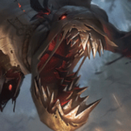
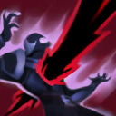
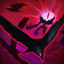

起手裝備
 增幅典籍
增幅典籍

調整為惡意 → 海克斯科技火箭腰帶 → 無限寶珠 → 虛空之杖 → 死亡之帽；完整 W 引導清野與視野外 R 伏擊優先，惡意首件服務大絕週期。起手增幅典籍，鞋線魔力之靴→魔法使之鞋；核對五成裝、前三核心及情境替換來源。


五件成裝與鞋子分開列示；起手與核心是購買路線，不是額外佔用的成裝欄位。鞋子完成時機仍依對線壓力與回城金錢調整。


黑暗收割／公理奧術大師／絕對專注／天寒地凍／即刻衝擊。依完整 W 引導清野與視野外 R 伏擊優先，惡意首件服務大絕週期核對觸發條件；確認主系各列一枚與一枚副系，First Strike映射先發制人、Empowerment映射遇強則強。


閃現保留進場角度與撤退彈性，重擊維持打野必備。 本英雄以法師／視野伏擊／範圍恐懼定位使用；7.3b不改重擊主動斬殺值，需看進化與充能。
加點優先：W > Q > E
優先級W > Q > E；保留適合本頁清營的前三級，之後依優先級逐級檢查，R在5／9／13級。此為15級編輯順序，不宣稱逐場固定最優。
參與擊殺英雄或史詩級野怪後會留下可移動的稻草人，充能後爆炸並恐懼附近敵人。
符合脫戰且未被看見等被動條件時，傷害技能可恐懼敵人；主動造成依當前生命計算的魔法傷害與恐懼。近期已被費德提克恐懼的目標改承受額外傷害，不能立刻重複恐懼。

引導汲取附近多個敵人的生命，持續造成魔法傷害並治療自己；完整引導的最後一下傷害與回復最高。
向前揮出鐮刀造成魔法傷害與緩速，中央命中的敵人會被沉默。

短暫引導後閃現到目標區域，召喚群鴉持續造成大量範圍魔法傷害。
完整 W 引導清野與視野外 R 伏擊優先，惡意首件服務大絕週期。修正 R 恐懼後立即 Q 再恐懼與 W 引導中斷的連招說明。
4技跳入 → 1技追加傷害 → 3技中央沉默 → 2技完整汲取
先滿足脫戰與視野條件再跳大觸發恐懼；近期已被恐懼者的一技改追加傷害，不會再次恐懼。二技放在最後，避免為接技能主動截斷引導。
1技恐懼 → 3技沉默 → 2技完整汲取 → 普攻
先用一技限制移動，再以三技沉默防止反打，確保二技能完整引導。
4技跳入 → 閃現延伸位置 → 2技 → 3技
大絕落地後可立刻閃現調整群鴉位置，追上後排或避開正面控制。
二技可同時汲取多個野怪，拉營地時讓範圍覆蓋所有目標並盡量完成最後一段爆發。五級前以健康清野為主，避免在缺乏視野時和強勢打野單挑。
惡意 → 海克斯科技火箭腰帶 → 無限寶珠為預設前段順序。完整 W 引導清野與視野外 R 伏擊優先，惡意首件服務大絕週期。後兩格依敵方實際威脅替換；先完成關鍵核心，再決定防裝與穿透，支援物件前確認重擊充能及隊友線權。
耐心等待敵人進入窄口或物件坑，避免在正面被看見後硬開大。參與擊殺生成的稻草人會移動並爆炸恐懼，可在殘局繼續擾亂陣型。
以同頁打野威脅名單夜曲、厄薩斯、鏡爪更新，有利名單僅是既有機制判斷，排除與威脅重複者；費德提克入侵仍看兩側線權、血量及關鍵技能，不當作固定單挑勝率。
對局名單是機制與分路判斷，不代表固定勝率；需同時看雙方熟練度、兵線與陣容。
替換以本頁五件成裝為基準；同一格建議擇一。二、三級鞋是一條升級線，換鞋時整條同步；魔劍進化不占新欄位。
高
觸發：敵方前排物防／魔防成形，或近身普攻威脅明顯。
已帶對應穿透或冰霜之心時保留，不重複購買；依實際傷害類型決定。
高
觸發：主要死亡原因是一輪集火，無法完成輸出或控制。
虛空之杖 → 中婭沙漏
敵方爆發能直接擊殺你時，以中婭沙漏取代末件；主動效果占成裝格。
敵方爆發能直接擊殺你時，以中婭沙漏取代末件；主動效果占成裝格。
高
觸發：敵方法術先手或持續魔法傷害成為主要威脅。
虛空之杖 → 女妖面紗
主要死亡原因是單次技能開戰時改女妖；護盾被消耗後仍要後退。
主要死亡原因是單次技能開戰時改女妖；護盾被消耗後仍要後退。
高
觸發：魔法傷害與控制鏈影響生存或輸出。
魔力之靴 → 水星之靴
魔法傷害及可被韌性縮短的控制占主導時，鞋線整條改水星之靴→鎖鏈軍靴。
魔法傷害及可被韌性縮短的控制占主導時，鞋線整條改水星之靴→鎖鏈軍靴。
韌性不能縮短所有控制，例如擊飛；護盾與解控各有適用條件。
高
觸發：敵人持續回復令集火失敗。
虛空之杖 → 黑魔禁書
敵方回復妨礙集火且隊友無法維持重創時，改黑魔禁書；可先用遺忘寶珠過渡。
敵方回復妨礙集火且隊友無法維持重創時，改黑魔禁書；可先用遺忘寶珠過渡。
7.3d差異核對：本頁核對官方英雄／裝備差異與現行配置參照；未列的技能不表示已完成逐級實測。查看校正範圍。
本頁校正版本：7.3d；校正日期：2026-10-25。
參考來源標示版本：7.3c
本輪核對官方版本差異、道具/符文引用、五成裝與鞋線、逐級加點及情境替換一致性。Tier及玩法屬本站編輯判斷，不是官方排名或台服勝率；未公開的全級技能表不推算。
評級理由：7.3c 維持 A（本站判斷）。依同分路7.3b參考 A，B → A，作本站評級。 完整 W 引導清野與視野外 R 伏擊優先，惡意首件服務大絕週期；沒有台服同分路勝率樣本。 7.3c 未改動此分路的英雄數值，沒有新證據只因版本號而升降。
Riot 官方資料 ↗ · Riot 官方資料 ↗ · Riot 官方資料 ↗ · Riot 官方資料 ↗ · Riot 官方資料 ↗ · WildRiftFire 參考攻略 ↗
7.3c 的直接英雄倍率改動屬符文大亂鬥；本召喚峽谷配置承接 7.3b。未把模式專屬增削轉為峽谷增削。
五件成裝、獨立鞋線、起手、核心、情境替換引用與一般符文列別均重新檢查；移除裝備不列入當前推薦。